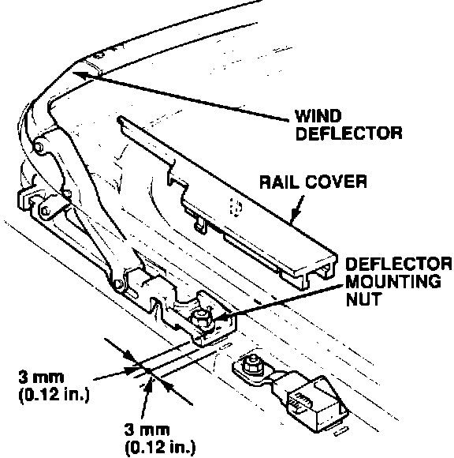
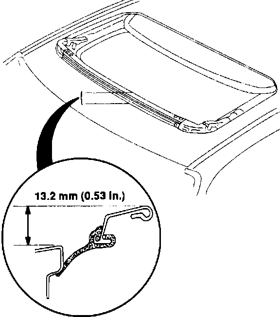

Sunroof - Wind Deflector Seal Deformed
90acura01YEAR MODEL VIN APPLICATION
1990 INTEGRA LS & GS
3-DOOR
April 16, 1990
BULLETIN NO.
90-004
Deformed Sunroof Wind Deflector Seal
SYMPTOM
The sunroof wind deflector doesn't sit at the proper height when the sunroof is open.
PROBABLE CAUSE
The wind deflector seal is deformed.

CORRECTIVE ACTION
1. Remove the wind deflector.
2. Remove the original seal from the deflector, then install the new seal listed under PARTS INFORMATION.

3. Reinstall the wind deflector. Adjust the deflector so the edge of the seal touches the roof panel evenly.
PARTS INFORMATION
Deflector Seal: P/N 70511-SK7-003
WARRANTY INFORMATION
In warranty: The normal warranty applies.
Out-of-warranty: Any repair performed after warranty expiration may be eligible for goodwill consideration by the District Service Manager. You must request consideration, and get the DSM's decision, before starting work.
Operation number: 814159
Flat rate time: 0.3 hour
Failed P/N: 70500-SK7-003
Defect code: 004
Contention code: B99